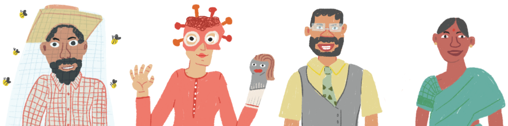

# More Math of COVID-19
### How we can bring this pandemic to an end with masks and social distancing!

## Chapter 3: Honeybee Wisdom
Let's call up this Beekeeper!
Wait, so social distancing is a geometry problem?
It's all about minimizing the empty space!
But how big are the circles?
Get out your pencil, paper, and a coin!
Let's complete our honeybee blueprint for social distancing.
We need to maximize the packing density.
Where do we go from here? The Beekeeper has a suggestion. Click the map below to visit the Fisherwoman!